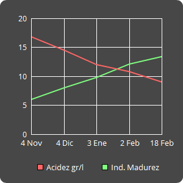

- WashingtonNaranja

Mutación localizada en Bahia (Brasil) alrededor del año 1800. El árbol es vigoroso con alguna espina en las ramas de mayor vigor. Las flores carecen de polen y al igual que el resto de variedades del grupo navel, los frutos presentan ombligo.
Precisa tratamiento para evitar la caída del fruto, si se desea mantener hasta finales de febrero.
- Fecha de recogida
- Caracteristicas del fruto
-
Peso
210gr. / 240gr.
-
Diametro
78mm. / 83mm.
-
Corteza
3,5mm. / 4,5mm.
-
Zumo
50% / 55%
-
Semillas
No
